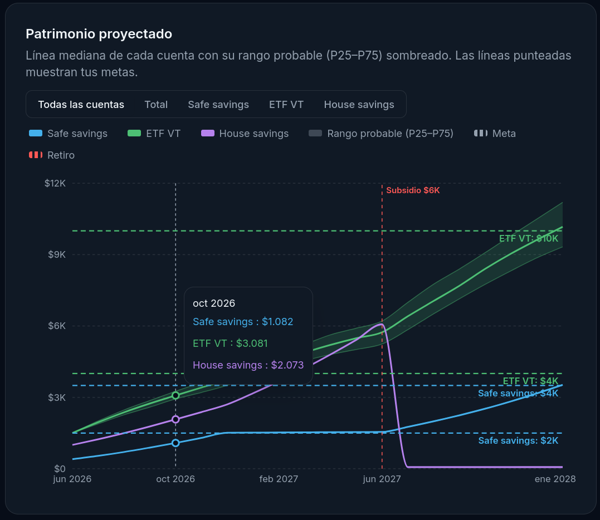
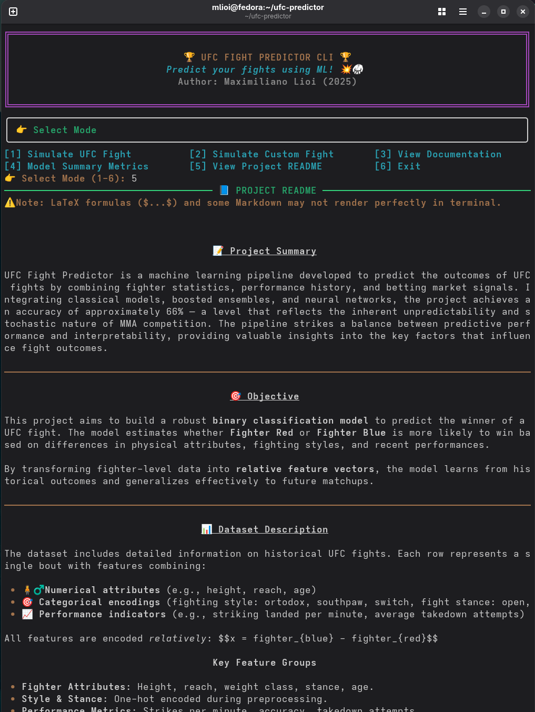

01
Experiencia
Feb 2025 — presente
Santiago, CL
Santiago, CL
NoiseGrasp
Data Scientist
- Calibro y valido modelos bayesianos de Marketing Mix Modeling para estimar el ROI incremental de canales publicitarios, ejecutando pipelines de ETL, entrenamiento y análisis para clientes de Latinoamérica y EE.UU.
- Contribuyo a librerías internas de Python para modelamiento estadístico, extendiendo módulos de validación y reporting mediante Git, pull requests y code reviews.
- Implementé Simulation-Based Calibration (SBC) para evaluar distribuciones posteriores y construir benchmarks de MCMC y aproximaciones variacionales.
Ene 2024 — Abr 2024
Santiago, CL
Santiago, CL
Universidad de O'Higgins
Ayudante de Investigación
- Implementé algoritmos de programación convexa y no lineal con SciPy y CVXPY para proyecciones sobre conjuntos prox-regulares, en un proyecto Fondecyt.
- Realicé experimentos numéricos para verificar el comportamiento de los algoritmos y apoyar el análisis de los métodos estudiados.
Ene 2023 — Abr 2023
Santiago, CL
Santiago, CL
Pedro Donoso Ingenieros Asociados
Data Scientist Trainee
- Desarrollé modelos de regresión espacial para predecir precios inmobiliarios, abordando autocorrelación y heterogeneidad espacial con datos del American Community Survey en R.
- Procesé y transformé datos con Python y Pandas, construyendo variables para caracterizar servicios de transporte público a partir de ADATRAP.
02
Proyectos
FinOpt
Ene 2026 — Jun 2026Python · CVXPY · FastAPI · React/Vite · Supabase · Docker

Plataforma full-stack de planificación financiera basada en objetivos: simulación Monte Carlo, optimización convexa con restricciones probabilísticas (CVaR), búsqueda de horizonte mínimo de inversión con garantías probabilísticas, procesamiento asincrónico, progreso en tiempo real y tests de integración.
UFC Fight Predictor
Abr 2025 — Jul 2025Python · Scikit-learn · XGBoost · AutoGluon · Rich · Docker

Pipeline end-to-end de ML para predicción de resultados UFC: ETL, feature engineering y entrenamiento con Scikit-learn, XGBoost y AutoGluon, alcanzando 66% de accuracy frente a un baseline de 55%. Arquitectura modular orientada a objetos y aplicación CLI con Rich empaquetada en Docker.
03
Educación
Mar 2024 — Ene 2025
Magíster en Ciencias de la Ingeniería
Universidad de Chile · Mención Matemáticas Aplicadas
- GPA 6.9 / 7.0
Mar 2018 — Ene 2025
Ingeniero Civil Matemático
Universidad de Chile
- GPA 7.0 / 7.0
04
Habilidades técnicas
Lenguajes
ML, Estadística y Optimización
Desarrollo y Frameworks
Idiomas
05
Publicaciones
Garrido, J.G., Lioi, M. & Vilches, E. — Inexact Catching-Up Algorithm for Moreau's Sweeping Processes. Applied Mathematics & Optimization, 92, 34 (2025).
↗ doi.org/10.1007/s00245-025-10307-w ↗ arXiv:2501.04781
↗ doi.org/10.1007/s00245-025-10307-w ↗ arXiv:2501.04781
06